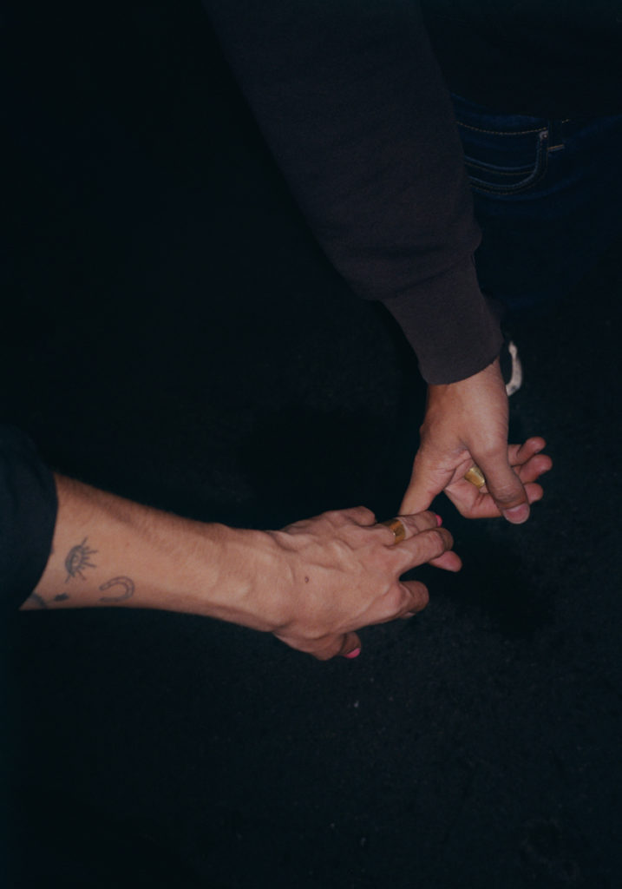
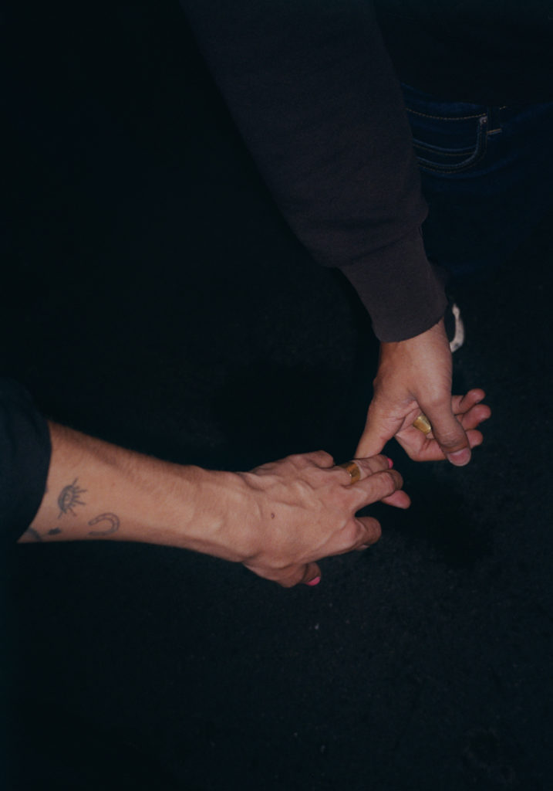

Info
Die morgendliche Zeitung. Das Wahlplakat an der Straßenecke. Die Unterhaltung im Zug. Das
geflüsterte Geheimnis. Die
zahlreichen Symbole, die uns beim Lesen begegnen. Die
verschleiernde Rhetorik in der Politik, die Handzeichen, die Gesagtes unterstreichen.
Wörter, die Sätze verbinden und Sinnzusammenhänge schaffen oder
das Fragezeichen am Ende des Satzes.
Ob gedruckt, vorgetragen oder gestikulierend, Sprache umgibt uns. Wir
modellieren unsere Sprache mit unserer Stimme. Wir können Informationen vermitteln, Meinungen austauschen und
in unser Innerstes blicken lassen.
Das Zitat Ludwig Wittgensteins:
Die Grenzen meiner Welt
sind die Grenzen meiner Sprache
verdeutlicht, dass unsere Welt die Sprache begrenzt. Grenzen, die die Bedeutung eines Wortes exakt festlegen, gibt es beinahe nie. Sie werden von jeder Person selbst gezogen, jede:r zieht somit seine Wortbedeutungsgrenzen nach der n Erfahrung. Wortdefinitionen werden immer vom eigenen Erfahrungsschatz beeinflusst und damit auch die Sprache und ihr Gebrauch. Unser Sprachraum hat Grenzen. Doch wir hinterfragen vieles nicht, gehen den Strukturen nicht mehr auf den Grund, durch die wir geformt und verändert werden. Vor diesem Hintergrund will Hacking Language unser Leseverhalten und Sprachsysteme erforschen und in experimentellen Hacks alltägliche Sprachrituale hinterfragen.
Wie können Emotionen beim Lesen sichtbar gemacht
werden?
Wie wirkt es, wenn Gesten und Gesagtes nicht übereinstimmen?
Wie sieht eine Schrift aus, die sich daran orientiert, wie ich spreche?
Das Ergebnis ist eine Erkundung sprachlicher Interventionen, die hier auf der Webseite
dokumentiert sind. Angelehnt an den Hacktivismus sind die Anleitungen für die Durchführung der Hacks frei
zugänglich und dem
Opensource Gedanken aufgreifend ausdruckbar.
Ich begreife den Begriff Hacking als spielerischen Umgang mit Systemen, deren Möglichkeiten und Grenzen zu
erkunden und sie im nächsten Schritt zu hinterfragen. Dazu gilt es bestehende Technologien, Produkte,
Materialien, Kontexte oder auch Prozesse als Systeme zu begreifen, sich an ihnen zu orientieren und diese auf
explorative, spielerische Weise zu manipulieren, anzupassen oder umzunutzen.
Was wäre, wenn wir unsere Sprache hacken?
Sprache ermöglicht es uns einzutauchen in fiktive Leben, in die Zukunft oder auch in die Welt wildfremder Menschen, zu deren Leben man niemals Zugang gehabt hätte. Sprache ist also ein Ort, an dem wir uns treffen können.